Formação de Teologia e Doutrina da Umbanda
Formação Online | 2 Anos | CertificadoExiste uma sabedoria universal por trás da sua sensibilidade espiritual. Ela tem nome, tem método, tem fundamento, e a Umbanda é a porta mais completa que existe pra estudar isso a fundo.
Você sente coisas que não sabe explicar. Já foi chamado de sensível demais, ou já sentiu que o que pratica numa gira, num culto ou numa oração tem um porquê que ninguém nunca te explicou de verdade.
Essa Formação existe pra isso: te dar teologia de verdade, não misticismo raso. Não importa se você é umbandista há 20 anos, se está começando agora, ou se nunca pisou num terreiro na vida, se existe em você uma pergunta espiritual séria, ela é pra você.
QUERO ME FORMAR EM TEOLOGIA DA UMBANDA2 ANOS DE CONTEÚDO · 90 AULAS · CERTIFICADO
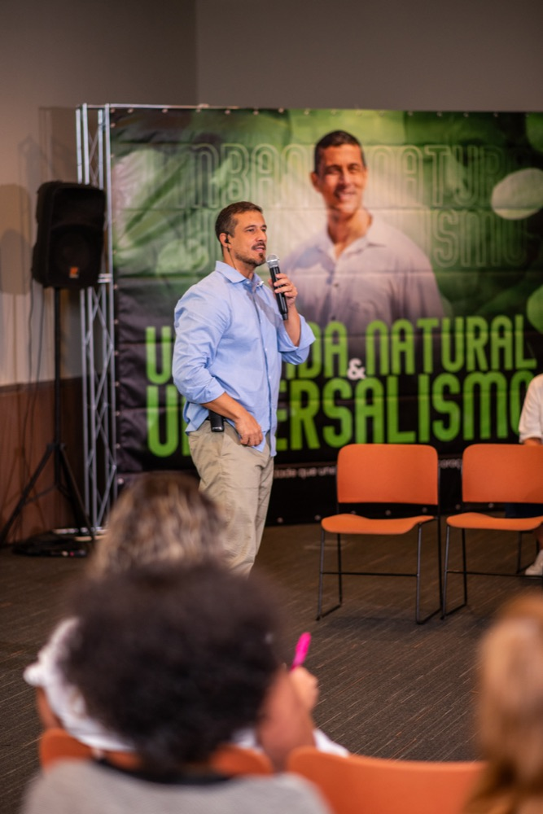
Não precisa se identificar como médium, sacerdote ou nem sequer como umbandista ainda.
Só leia com calma:
Se duas ou três dessas frases tocaram em você, isso não é coincidência. É chamado. E chamado sem estudo vira confusão, chamado com teologia vira missão.
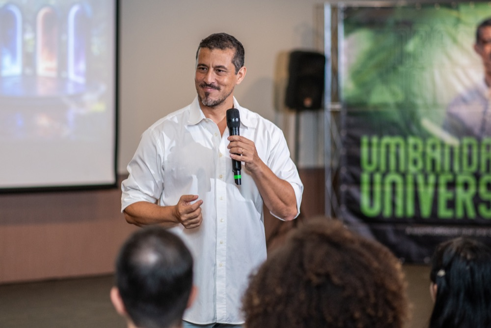
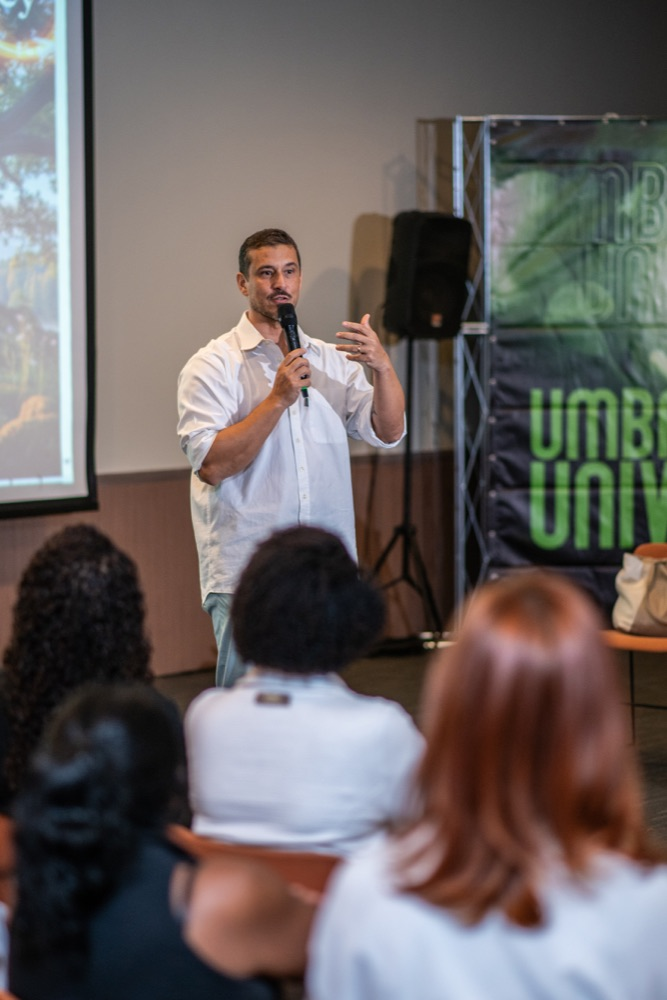
A maioria de quem sente isso passa anos calada, achando que é imaginação, estresse, "coisa da cabeça", porque nunca ninguém deu nome, fundamento e método pra essa sensibilidade.
Ricardo repete uma frase há décadas, com quem estuda com ele: "Fora do conhecimento, não há libertação."
Quem não estuda vira refém, refém do medo, da culpa, ou de quem promete resolver a sua vida espiritual em troca de dinheiro.
Sua sensibilidade nunca foi o problema. A falta de fundamento, sim.
Hoje, na maioria dos terreiros, se canta, se dança, se incorpora, mas quase nunca se explica o que aquele arquétipo, aquela entidade, realmente representa. O médium fica apegado a um nome, a um status, sem nunca entender a origem, o fundamento, a força por trás dele.
E onde falta conhecimento, sobra espaço para manipulação: o medo do "castigo dos guias", a cobrança de "taxa de manutenção espiritual", a promessa de resolver a sua vida inteira com um "trabalho" caro.
Um antigo dirigente de terreiro, parceiro de décadas do Ricardo, tinha uma frase que ele repete até hoje:
"O médium que não estuda vira joguete na mão das trevas."— Sid, ex-vice-presidente do centro do Ricardo
O preço de não saber nunca é só espiritual. É dinheiro jogado fora, é dependência de quem promete o que não pode cumprir, é medo onde deveria haver clareza, e o pior: é nunca desenvolver de verdade a sua própria espiritualidade.
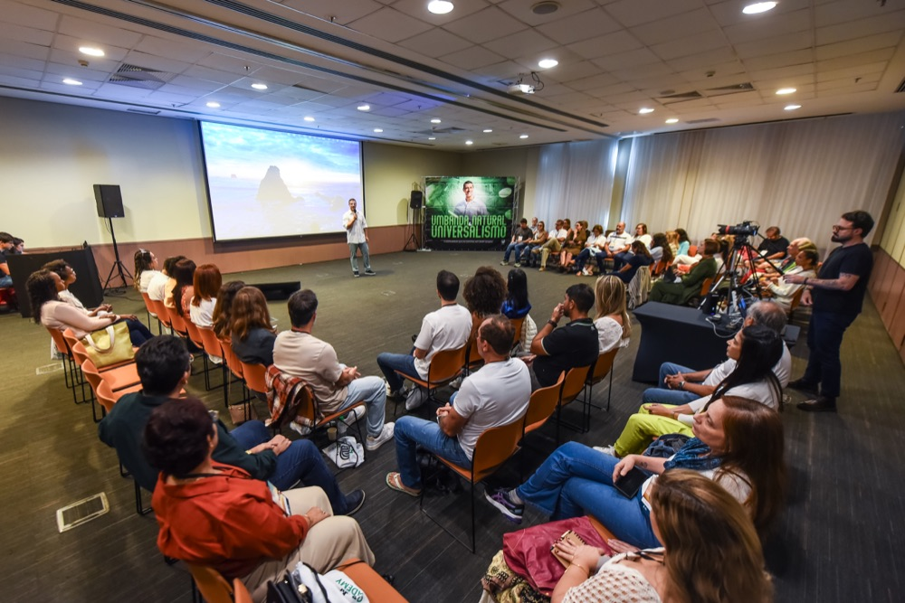
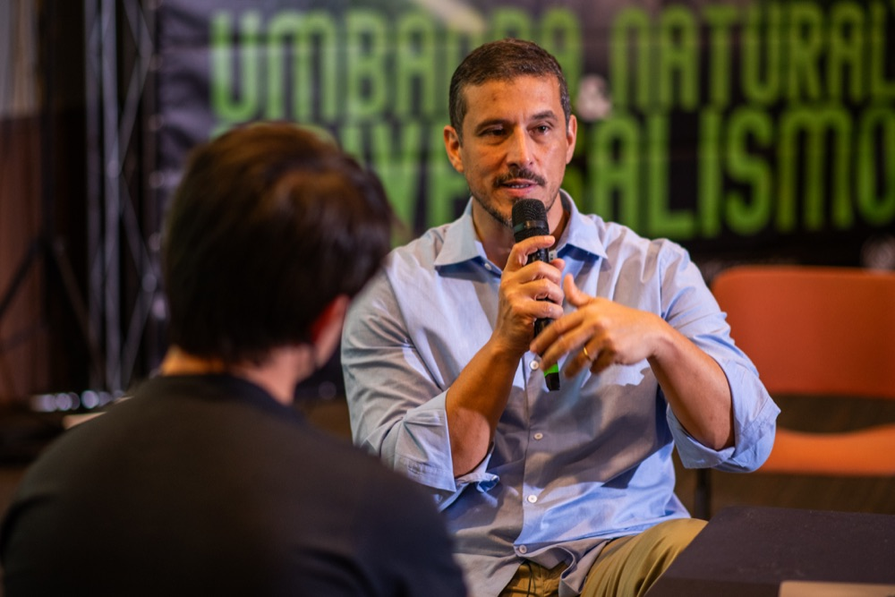
A Formação de Teologia e Doutrina da Umbanda é o método que Ricardo Di Napoli sistematizou em quase 20 anos de pesquisa e mais de 40 de vivência espiritual, pra transformar sensibilidade solta em fundamento sólido: teológico, filosófico e prático.
Não é decoreba de ritual, nem coleção de nomes de entidade. É entender a arquitetura espiritual por trás de cada arquétipo, cada elemento da natureza, cada orixá, e reconhecer essas mesmas forças vivas dentro de você.
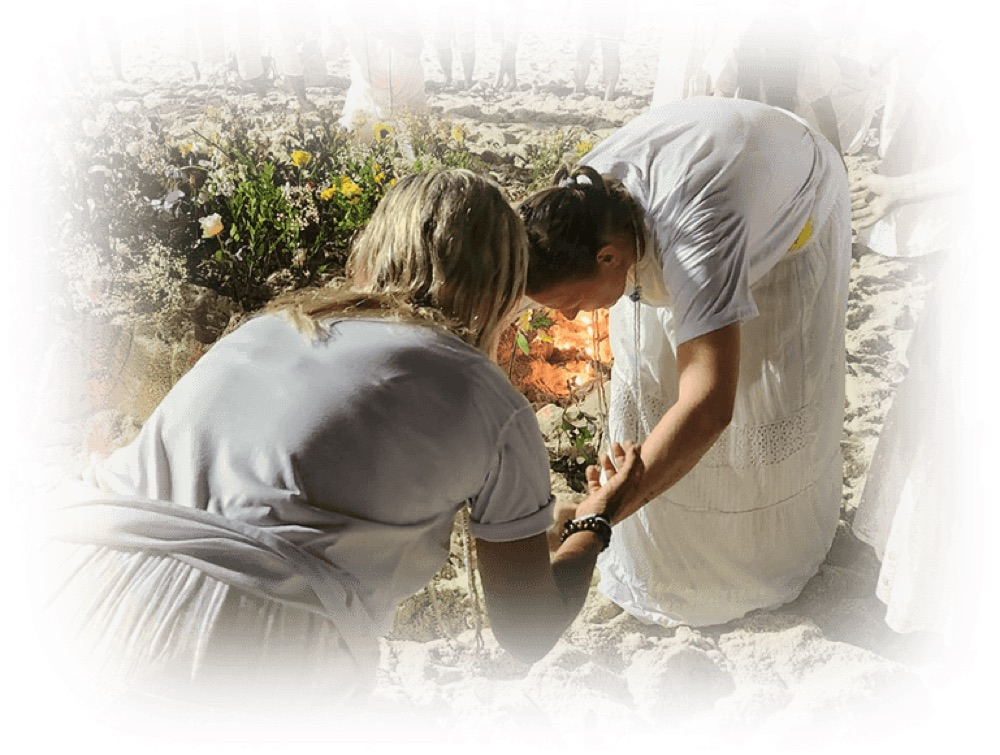
Ricardo usa o conceito junguiano de arquétipo pra explicar por que a Umbanda fala com qualquer pessoa, de qualquer tradição, mesmo quem nunca ouviu falar em orixá antes.
As mesmas forças divinas que a Umbanda chama de Oxum, Ogum, Iemanjá e Xangô, a humanidade já chamou de Ísis, Ares, Afrodite e outros nomes, em outras culturas, em outros tempos. Sob nomes diferentes, os mesmos princípios sempre estiveram presentes desde o início da criação.
A Umbanda só entrega isso numa linguagem construída em solo brasileiro, tecida pelos povos que formaram o Brasil: indígenas, africanos, europeus.
Por isso, essa Formação também é pra quem nunca vai incorporar, nunca vai virar médium de terreiro, mas quer entender, com profundidade real, a mesma sabedoria ancestral que atravessa todas as grandes tradições espirituais da humanidade.
"Fora do conhecimento, não há libertação."— Ricardo Di Napoli
90 aulas ao todo, quase 220 horas de conteúdo, organizadas em 5 pilares no primeiro ano e num aprofundamento sacerdotal no segundo.
Primeiro Ano: Os 5 Pilares
45 aulas, ~110h, 30+ vivências guiadas, 270+ PDFs complementares
Frequência e vibração, afinidade, sombra e luz. A base de qualquer conexão espiritual real.
Corpos sutis, processo anímico, fenômenos mediúnicos, a ponte da intuição. Entender antes de praticar.
Caboclos, pretos velhos, crianças, exus e pombagiras, boiadeiros, baianos, marinheiros, malandros, ciganos, povo do Oriente. O que cada um representa de verdade, muito além do nome.
Elementos da natureza, ervas quentes e mornas, velas, banhos, defumação. O porquê teológico por trás de cada gesto ritual.
Cada orixá como arquétipo divino, com seu fluxo positivo e negativo. Pra você reconhecer essas forças em você mesmo, não só admirá-las de fora.
Segundo Ano: Aprofundamento
45 aulas, ~110h, ao vivo com o Ricardo
No segundo ano, o estudo vai pro nível que muitos sacerdotes e dirigentes de terreiro usam pra formar os próprios filhos de santo: raízes históricas dos povos iorubá e banto, a ciência da manifestação mediúnica em profundidade, e um mergulho orixá por orixá, entidade por entidade, no plano mental e astral.
As aulas são ao vivo, semanais, e ficam gravadas na plataforma no mesmo dia, pra quem não puder acompanhar ao vivo.
Todo o Ano 1 já está gravado, liberado no seu ritmo. Toda semana tem reprise de uma aula do primeiro ano, pra quem quer estudar em grupo e tirar dúvida na hora.
Aula semanal ao vivo, com o Ricardo, sempre gravada no mesmo dia, ninguém fica pra trás por causa de horário.
Mais de 30 meditações e conexões práticas com entidades e elementos da natureza, a teoria vira experiência, não fica só no papel.
Cambone, escuta de entidades, defumação, banhos, firmeza do anjo da guarda, montagem de altar individual, ritual de conexão com os guias.
Um resumão por módulo pra fixar o conteúdo, e um encontro mensal com o Ricardo só pra responder suas perguntas.
3 anos de acesso à plataforma. Trilha acelerada (até 1 ano) ou no seu tempo (até 3 anos), as duas terminam com o mesmo certificado.
Sem restrição de idade, sem exigir mediunidade desenvolvida, sem precisar já ser sacerdote. Tem aluno de 20 a 78 anos, tem sacerdote e dirigente de terreiro estudando pra aprofundar, e tem aluno que nunca teve contato nenhum com Umbanda antes de começar.
"Eu tava numa casa como consulente e senti no meu coração que deveria me aprofundar, saber como funcionava de fato por dentro. A resposta que recebi não fez sentido pra mim, eu queria entender, não só vestir o branco e esperar. Então eu me afastei de tudo, silenciei, e pedi: 'se fizer sentido, me direcionem'. Um dia apareceu um vídeo do Ricardo explicando a Umbanda com muita clareza. Hoje, quando preciso de organização, de sabedoria, eu me silencio e busco o que um preto velho faria. Eu era uma pessoa que bebia socialmente, hoje não bebo mais e não sinto falta. Voltei a cuidar de mim, do meu corpo, da minha saúde. Se você tem dúvida, tem medo, estude, busque orientação. Conhecimento é tudo, e liberta, como o Ricardo diz. Foi uma liberdade muito grande pra mim." — Bruna, aluna da Formação
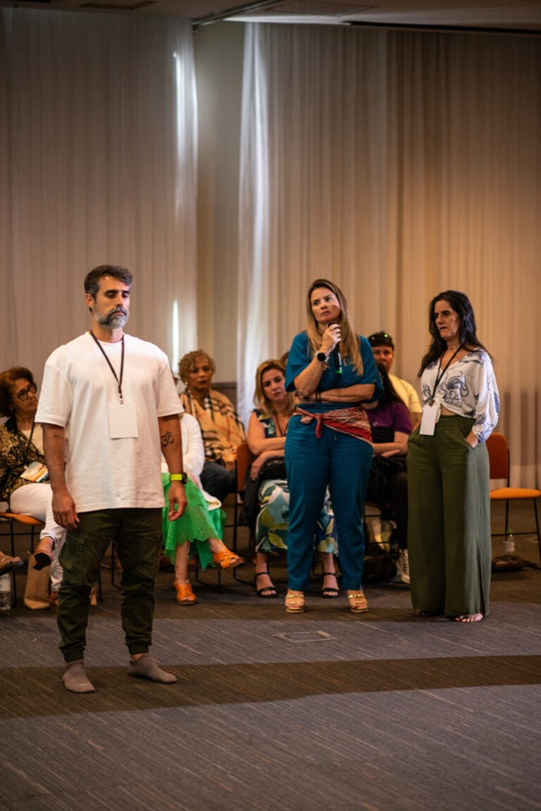
Essa Formação foi desenhada pra três tipos de pessoa:
Perguntas que sempre aparecem:
"Tenho 70 anos, ainda dá tempo de começar?"
Sim. Tem aluna com 78 anos estudando e formando junto com a turma. Enquanto você está respirando, você está em condições de aprender e servir.
"Não tenho mediunidade desenvolvida, consigo acompanhar?"
Sim, e é justamente o contrário do que muita gente pensa: o estudo é o que sustenta a mediunidade, não o inverso. Quem não estuda vira refém do que vem de fora.
"Não sou umbandista, isso vai fazer sentido pra mim?"
Sim. Você vai estudar arquétipos, elementos, leis espirituais que atravessam qualquer tradição, a Umbanda é só a linguagem mais completa e sistematizada que existe hoje pra estudar isso.
"Já sou sacerdote/dirigente de terreiro, vou aprender algo novo?"
Sim. Boa parte dos alunos do Ano 2 já são sacerdotes, e usam justamente esse conteúdo pra levar de volta e formar os próprios médiuns e filhos de santo.
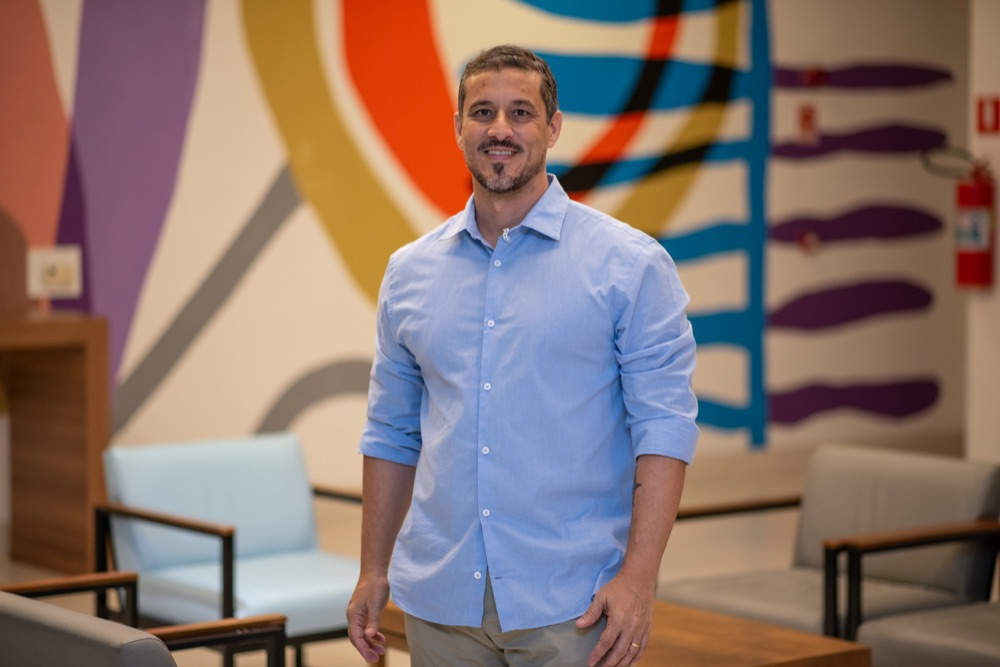
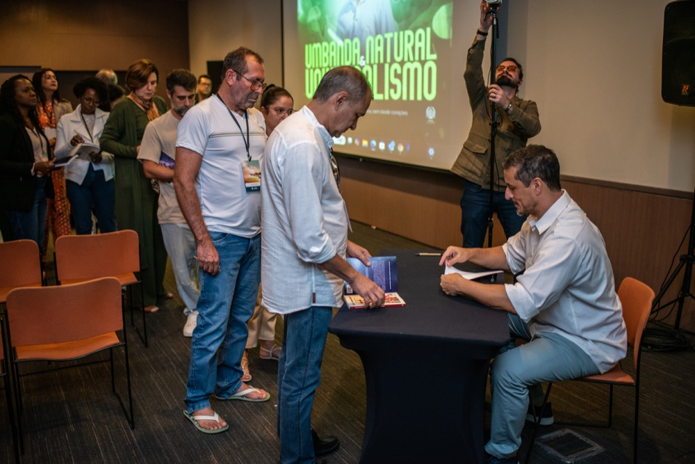
Ricardo Di Napoli tem mais de 40 anos de vivência dentro da Umbanda, é sacerdote, administrador, filósofo e teólogo, fundador do Movimento Umbanda Natural e da Arandu Academy. É bacharel em Filosofia e em Teologia, pós-graduado em Gestão Pública, e leva quase 20 anos sistematizando esse conhecimento numa metodologia própria de ensino, a mesma que já formou mais de 600 alunos, presencialmente e depois 100% online.
Fundador do CEEU, Centro de Estudos Espiritualistas Universal, onde conduz atendimentos espirituais gratuitos, e autor dos livros "Consciência Crística", "Salve, Malandragem!" e "As 7 Lágrimas do Preto Velho".
Sua proposta nunca foi vender misticismo raso. É uma referência em espiritualidade sem dogma, com uma missão clara: transformar sensibilidade em consciência, e consciência em libertação.
"Fora do conhecimento, não há libertação. Quem não estuda vai ser refém das sombras, vai ser joguete na mão de muitas pessoas, vai acabar sendo enganado." — Ricardo Di Napoli
Menos de R$ 7,00 por dia pra ter acesso aos 2 anos completos.
Ao final dos 2 anos, você recebe o Certificado de Formação em Teologia e Doutrina da Umbanda, com seu nome, emitido pelo próprio Ricardo Di Napoli. É o reconhecimento de que você não apenas sentiu a espiritualidade, você estudou, se aprofundou e sustentou esse conhecimento com método.
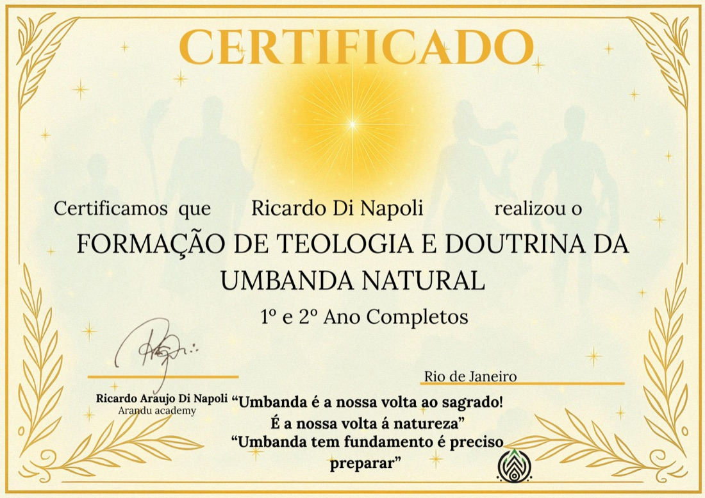
Não. A Formação foi feita tanto pra quem já pratica Umbanda quanto pra quem nunca teve nenhum contato, o estudo é o que sustenta e desenvolve a mediunidade, não o contrário.
Sim. Boa parte do conteúdo trata os arquétipos, os orixás e as entidades como princípios universais de comportamento e sabedoria, o mesmo tipo de estudo que Jung fez com os arquétipos, ou que a mitologia comparada faz entre culturas diferentes. Você pode estudar com profundidade mesmo sem nunca ter incorporado nada.
Segue o Movimento Umbanda Natural, criado pelo Ricardo, com uma abordagem universalista e sem misticismo raso, teologia, filosofia e prática juntas.
Sim, e é exatamente pra isso que muitos sacerdotes e dirigentes fazem a Formação, o Ano 2 tem nível de aprofundamento sacerdotal.
Sim, com o Ricardo, e ficam gravadas na plataforma no mesmo dia, quem não pode acompanhar ao vivo assiste depois, sem perder nada.
Você escolhe entre duas trilhas: uma mais acelerada (conclui os 2 anos em até 1 ano) e uma no seu próprio tempo (até 3 anos de acesso). As duas terminam no mesmo certificado.
Sim, 100% online, de qualquer dispositivo.
Sim, boleto parcelado disponível, e pra quem está fora do Brasil, pagamento via PayPal. Fale com a equipe pra ajustar a melhor forma pra você.
É um certificado próprio da Arandu Academy/Ricardo Di Napoli, reconhecido dentro do universo umbandista e usado por sacerdotes e dirigentes pra formar seus próprios médiuns, não é um diploma de ensino superior regulado pelo MEC.
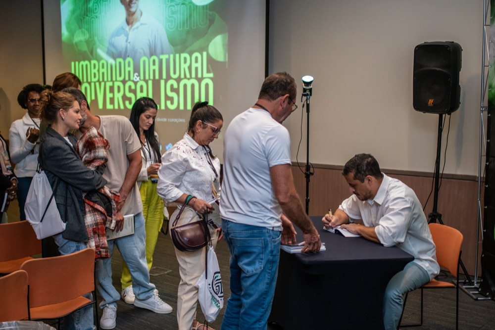
Você pode parar de guardar sua sensibilidade em silêncio, com medo de ser chamada de louco, de sensível demais, ou de estar sozinha nessa busca. Existe um caminho estruturado, com quase 20 anos de sistematização, pra transformar tudo isso em fundamento, teológico, prático e seu, pra sempre.
QUERO ME FORMAR EM TEOLOGIA DA UMBANDA